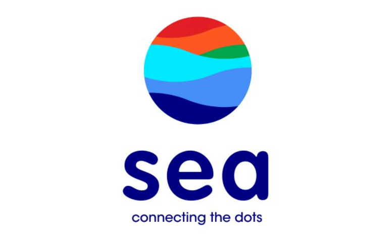

冬海集团 SEA Group
互联网大鳄的新加坡起点
以新加坡为起点，冬海集团将游戏、电子商务以及数字金融服务三大业务板块在东南亚铺开，成为区域内不可小觑的商业巨鳄。
从游戏到电商的“新”思路
2009年诞生于新加坡的冬海集团是东南亚地区集游戏、电商、数字支付业务于一体的互联网上市公司。集团的主要业务包括在线游戏品牌Garena、电商平台 Shopee 以及数字金融服务网络SeaMoney。集团旗下的Garena是知名网络游戏开发与发行商，以新加坡为原点，在东南亚、港澳台地区飞速成长，足迹遍布全球130多个城市，成为极具影响力的线上游戏互动平台；电商平台Shopee于2015年推出，成立之初便在新加坡、印尼、马来西亚、菲律宾、泰国、越南等市场同时铺开，如今已成长为东南亚家喻户晓的电商APP；早一年成立的SeaMoney，尽管业务板块相对年轻，但视野成熟广阔——它瞄准的是东南亚市场，旨在通过提供数字支付和金融服务改善区域内的生活与商业。
回顾集团的发展历程，可以发现其快速成长的驱动因素，一方面离不开企业自身的实力与开拓精神，另一方面也离不开新加坡助力商业发展的优势条件。集团的首席执行官兼创始人李小冬先生就曾表示，全世界没有其他地方比新加坡更加适合建立环球领先的科技业务：“在这里，我们可以借力最好的人才库，从最佳的监管环境获益，以及在区域最蓬勃的起步公司生态系统中成长。”
产学联动，人才辈出
人才是企业最宝贵的资源与财富，而能够接轨产业的人才更是关键。新加坡的高等学府皆深谙此道，积极与企业开展合作，为产业发展提供了丰厚的人才储备。冬海集团与新加坡国立大学、新加坡精深技能发展局的合作便是典范。三方联合推出新加坡首个在入职培训计划（Place and Train）模式下的技能创前程工读学士学位（Work-Study Degree Programmes）课程，让学生在大学开学前就获雇主聘用，学习期间领取工资，毕业后文凭和工作两不误。冬海集团也承诺在接下来的五年聘用120名学生。集团旗下的Shopee 也推出了Global Leadership Programme人才培养计划，会在全球范围内招收顶尖学校的毕业生作为管培生，期间在东南亚各个国家轮岗，以此建立对东南亚的理解；同时管培生也不会局限于电商部门，可能会进入母公司冬海集团的支付、游戏公司轮岗。
洞察区域市场的不二之选
2019年10月，贝恩公司、谷歌和淡马锡联合发布的《东南亚数字金融服务报告》数据显示，东南亚的互联网经济到2025年将达到3000亿美元，且仍然有超过75%的消费者缺乏银行服务。对于互联网玩家来说，服务的匮乏便意味着商机；同时，立足新加坡，也为企业洞察整个区域市场的需求提供了极大的便利。也许正是因此，深耕区域市场的冬海集团选择入局申请新加坡数字银行牌照。集团首席执行官兼创始人李小冬表示：“通过Garena、Shopee和SeaMoney，我们已经深知区域内（东南亚）千禧一代的所想所需，我们也具备相当的能力来满足他们的需求；技术、基础设施、数据分析能力以及管理经验我们一应俱全，有能力来设计、发展新加坡的第一个完整的数字银行。”
参考链接：